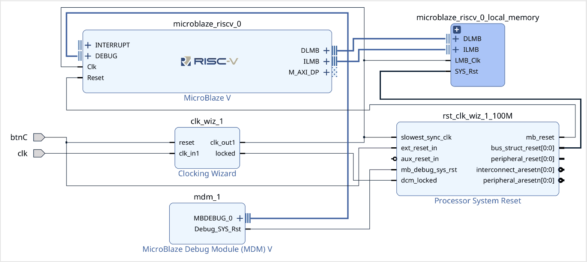

00이 장의 개요
01장에서 만든 Block Design을 이어서 Clocking Wizard 설정, Clock/Reset 연결, 기존 XDC 확인, Validate Design 및 빌드를 진행한다.
- Basys3 100 MHz
- Clocking Wizard
- Processor System Reset
- locked
- dcm_locked
- Active-Low Reset
원본: part01/legacy/pages/soc/02_clock_reset_processor_system_reset.html (이관 원본 보존본)
전체 학습 위치
01장 Block Design에서 계속 진행
기존 Block Design 열기
Vivado의 Sources → Design Sources에서 01장에 저장한
soc01_mb_bram.bd를 연다. MicroBlaze V, 16 KB Local BRAM, Clocking Wizard, Processor System Reset은 다시 생성하지 않는다.Clocking Wizard 설정 열기
Diagram에서
clk_wiz_1을 더블클릭 → Clocking Options를 확인한다.Basys3 클럭 입력 확인
Basys3 W5는 단일 100 MHz 클럭 입력이므로 Primary Input Source는 Single ended clock capable pin, Primary Input Frequency는 100.000 MHz로 맞춘다.
clk_out1도 설정값 100 MHz인지 확인한다.입력 포트 형태 확인
CLK_IN1_D가 있다면 차동 입력 설정인지 확인하고 단일 입력으로 변경한다.Ctrl+S로 저장한다.
Clock / Reset 외부 포트 연결
01장에서 생성된 Clock/Reset IP를 Basys3의 외부 Clock 및 버튼 신호에 연결한다. 현재 Diagram의 외부 포트명과 01장의 XDC를 대조한다.
Clock 외부 포트
단일 입력으로 설정된
clk_wiz_1의 Clock 입력을 우클릭 → Make External로 외부 포트를 만든다. 생성된 외부 포트명을 확인한다.Reset 외부 포트
clk_wiz_1/reset의 기존 배선을 확인한 후 필요하면 Make External을 실행한다. 동일한 외부 Reset 신호를rst_clk_wiz_1_100M/ext_reset_in에 연결한다.중복 포트 확인
이미 외부 포트가 생성되어 있다면 새로 만들지 않는다. 실제 외부 Clock과 Reset 포트명을 SECTION 04에서 기존 XDC와 대조한다.

clk(W5), btnC(U18) 포함
회로도 확대 ↗| 출발 신호 | 도착 신호 |
|---|---|
| 외부 Clock 포트 · W5 · 100 MHz | clk_wiz_1/clk_in1 |
| 외부 Reset 포트 · U18 | clk_wiz_1/reset |
| 외부 Reset 포트 · U18 | rst_clk_wiz_1_100M/ext_reset_in |
| clk_wiz_1/locked | rst_clk_wiz_1_100M/dcm_locked |
| clk_wiz_1/clk_out1 | rst_clk_wiz_1_100M/slowest_sync_clk |
Processor System Reset 설정 · 연결
Basys3 Center Button은 누르면 High가 되는 입력으로 사용하므로 ext_reset_in도 Active-High로 맞추는 것이 직관적이다.
| 항목 | SoC 02 기준 | 이유 |
|---|---|---|
| External Reset Logic Level | Active-High | BTNC 누름 = High |
| Auxiliary Reset | 미사용 | 현재 내부 보조 Reset 없음 |
| MicroBlaze Debug Reset | MDM V 연결 | Debug Reset 경로 유지 |
dcm_locked | clk_wiz_1/locked | Clock 안정 상태 반영 |
slowest_sync_clk | 100 MHz System Clock | 현재 단일 Clock Domain |
외부 Push Button은 FPGA Clock과 비동기이며 기계적 바운스가 발생할 수 있다. Processor System Reset은 Reset 입력 검출과 동기화 기능을 제공하지만, 이를 일반적인 Push Button Debouncer로 간주하지 않는다.
MDM V의 Debug_SYS_Rst는 mb_debug_sys_rst로 연결한다. aux_reset_in을 사용하지 않으면 Active-High 설정에서 0으로 고정한다.
01장 XDC 설정 확인
01장에서 등록한 Basys-3-Master.xdc를 다시 설정하지 않고, 현재 Block Design의 외부 포트와 일치하는지만 확인한다.
기존 XDC 확인
Sources → Constraints에서
Basys-3-Master.xdc를 열어 활성화된 Clock 및 Reset 제약을 확인한다.BD 포트 대조
외부 포트
clk,btnC가 XDC의get_ports와 일치하는지 확인한다. 해당 포트가 이미 일치하므로 변경하지 않는다.
| BD 외부 포트 | Basys3 핀 | 제약 |
|---|---|---|
clk | W5 | LVCMOS33 · 100 MHz · 10 ns |
btnC | U18 | LVCMOS33 |
신호 경로 추적
다음 신호가 실제 Diagram에서 연결되었는지 확인한다. 외부 Clock/Reset 포트명은 현재 회로도에서 확인한 이름을 사용한다.
Primary Clock
BD 외부 Clock →
clk_wiz_1단일 입력Generated Clock
clk_wiz_1/clk_out1 → microblaze_riscv_0/ClkLock
clk_wiz_1/locked → rst_clk_wiz_1_100M/dcm_lockedExternal Reset
BD 외부 Reset →
rst_clk_wiz_1_100M/ext_reset_inCPU Reset
rst_clk_wiz_1_100M/mb_reset → microblaze_riscv_0/Reset
Validate Design — 첫 번째 Stage Gate
첫 Validate Design
외부 Clock/Reset 연결 및 기존 XDC와의 일치 확인 후
Ctrl+S로 Block Design을 저장하고 Validate Design을 실행한다.Clock Association
MicroBlaze V, Local Memory, Processor System Reset이 동일한 100 MHz Clock에 연결되었는지 확인한다.
Reset Association
AXI 계층이 아직 최소 구성이라도
interconnect_aresetn,peripheral_aresetn이 올바른 극성으로 생성되는지 확인한다.
Validation successful 메시지를 확인한다. Error 또는 Critical Warning이 없어야 한다. M_AXI_DP 주소 경로 미완성 경고(BD 41-2670)는 현재 미연결 AXI 확장 포트와 구분하여 후속 주변장치 연결 때 확인한다.Generate Output Products · HDL Wrapper
Generate Output Products
Sources에서
soc01_mb_bram.bd를 우클릭 → Generate Output Products를 실행한다. 기존 설정인 Out of context per IP를 사용한다.생성 결과 확인
Log에 합성용/시뮬레이션용
soc01_mb_bram.v,soc01_mb_bram_wrapper.v,soc01_mb_bram.hwh,soc01_mb_bram.hwdef생성 메시지가 있는지 확인한다.HDL Wrapper · Top 확인
Sources → Design Sources에서
soc01_mb_bram_wrapper가 프로젝트에 등록되어 Top으로 지정되었는지 확인한다. 생성 폴더에soc01_mb_bram_wrapper.v파일이 존재하는 것만으로는 Top 설정이 확인되지 않는다.필요한 경우 Create HDL Wrapper
Sources에 Wrapper가 없다면
soc01_mb_bram.bd우클릭 → Create HDL Wrapper → Let Vivado tools manage wrapper and auto-update를 선택한다. 생성 후 Top 지정 여부를 다시 확인한다.
soc01_mb_bram.v, soc01_mb_bram_wrapper.v, soc01_mb_bram.hwh, soc01_mb_bram.hwdef 파일 생성 메시지를 확인한다. 파일 생성과 프로젝트 Top 지정은 별도 절차이다.soc01_mb_bram_wrapper (Top) → soc01_mb_bram_i → MicroBlaze V · Local BRAM · Clock/Reset IPSynthesis · Implementation · Generate Bitstream
Run Synthesis
Flow Navigator → Run Synthesis를 실행한다. 이미 성공했다면 다시 실행하지 않고 완료 상태를 확인한다.
Run Implementation
Flow Navigator → Run Implementation을 실행한다. Placement/Routing 완료 후 Design Runs에서
impl_1의 완료 상태를 확인한다.Timing 및 제약 확인
Design Runs에서 WNS/TNS와 Failed Routes를 확인한다. XDC의 100 MHz Clock 제약과
clk(W5),btnC(U18) 포트를 점검한다. Critical Warning과 일반 Warning은 구분하여 확인한다.Generate Bitstream
Flow Navigator → PROGRAM AND DEBUG → Generate Bitstream을 클릭한다. 완료되면 생성 메시지와
impl_1의 write_bitstream Complete 상태를 확인한다.Bitstream 파일 확인
프로젝트의
*.runs/impl_1/에서soc01_mb_bram_wrapper.bit파일 생성 여부를 확인한다. 실제 파일명과 경로는 해당 Run 결과를 따른다.
최종 Bitstream 생성 결과 · Vivado 2024.2
제공된 실습 화면에서 Bitstream Generation successfully completed와 write_bitstream Complete!를 확인하였다. 최종 XDC는 09절의 -add 제거안이다.
| 검증 항목 | 실제 결과 |
|---|---|
| Bitstream | write_bitstream Complete! |
| Setup | WNS +1.372 ns · TNS 0.000 ns |
| Hold | WHS +0.045 ns · THS 0.000 ns |
| Pulse Width | WPWS +3.000 ns |
| Routing | Failed Routes 0 |
| FPGA 자원 | LUT 1,731 · FF 1,441 · BRAM 4 · DSP 0 |
| Power | 0.186 W (Vivado 추정치) |
| Methodology | Critical Warning 0건 · 일반 Warning 5건 |
Methodology Warning · XDC 수정 및 재검증
초기 create_clock -add 설정에서 TIMING-6 Critical Warning 2건이 발생했다. create_clock 전체 주석 처리로 한 차례 경고를 점검한 뒤, 100 MHz 입력 Clock 제약을 유지하며 -add 옵션만 제거하는 방법을 실제 Vivado 2024.2에서 적용하였다.
1. XDC 변경 단계 비교
| Clock 제약 | Critical Warning | 일반 Warning | 판정 |
|---|---|---|---|
create_clock -add | 2건 | 6건 | TIMING-6 발생 |
create_clock 전체 주석 처리 | 0건 | 4건 | 중간 확인 |
-add만 제거 | 0건 | 5건 | 최종 적용 · Bitstream 생성 성공 |
2. 최종 적용 XDC — -add 제거
최종 적용 코드 · Basys-3-Master.xdc
## Clock signal
set_property -dict { PACKAGE_PIN W5 IOSTANDARD LVCMOS33 } [get_ports clk]
# (변경) -add 옵션 제거 — 100 MHz Clock 제약 유지
create_clock -name sys_clk_pin -period 10.00 -waveform {0 5} [get_ports clk]
# (기존) -add 옵션 포함 설정은 주석 처리
#create_clock -add -name sys_clk_pin -period 10.00 -waveform {0 5} [get_ports clk]외부 clk는 W5에 연결하며 create_clock으로 10 ns(100 MHz)를 지정한다. 같은 소스에 불필요한 Clock 객체가 추가되는 것을 피하도록 -add를 제거했다.
3. 최종 Methodology 일반 Warning
최종 화면에는 Critical Warning 0건 · 일반 Warning 5건이 표시된다. 화면에서 상세 내용을 읽을 수 있는 4건은 아래와 같다. 나머지 1건의 상세 내용은 제공된 화면만으로 확정하지 않는다.
| Warning | 건수 | 확인할 사항 |
|---|---|---|
LUTAR-1 | 2건 | Serial_Dbg_Intf 내부 비동기 Preset/Clear를 구동하는 LUT 경로와 글리치 위험 확인 |
TIMING-9 | 1건 | CDC(클럭 영역 교차) 경로의 동기화 구조 확인: report_cdc |
TIMING-18 | 1건 | btnC 입력과 sys_clk_pin 사이의 Input Delay 경고: 비동기 Reset 경로 검토 |
| 그 밖의 Warning | 1건 | 스크롤 아래의 미확인 상세 메시지 추가 확인 |
4. Clock · Timing 추가 확인
최종 Bitstream 생성, WNS/WHS 양수, Critical Warning 0건은 확인되었다. 그러나 Clock 제약 전체와 모든 미제약 경로가 검증된 것은 아니므로 다음 명령으로 확인한다.
# 외부 기준 Clock 및 Generated Clock 주기 확인
report_clocks
# W5의 clk에 연결된 Clock 객체 확인
get_clocks -of_objects [get_ports clk]
# 예상하지 않은 미제약 경로 확인
check_timing -verbose
# 잔여 Warning 및 CDC 경로 확인
report_methodology
report_cdc-add 제거 상태에서 Bitstream 생성 성공과 Critical Warning 해소까지 확인했다. 남은 일반 Warning은 보드 동작과 별개로 상세 경로 분석이 필요하다. 임의로 set_false_path를 추가하여 경고만 숨기지 않는다.AMD Vivado 2024.2 참고: UG835 · create_clock · UG903 · Timing Constraints Wizard.
오류 점검
| 증상 | 원인 후보 | 확인 위치 |
|---|---|---|
| CPU가 실행되지 않음 | mb_reset이 계속 High | locked → dcm_locked, 외부 Reset 상태 확인 |
| Reset이 반대로 동작 | ext_reset_in polarity 불일치 | Processor System Reset 설정과 BTNC 논리 확인 |
| Clock 관련 Critical Warning | XDC create_clock 누락 또는 포트명 불일치 | W5, get_ports clk, Report Clocks 확인 |
| AXI IP가 Reset에서 안 풀림 | Active-Low Reset을 잘못 반전 | peripheral_aresetn, interconnect_aresetn 확인 |
| Reset 해제 직후 불안정 | Clock lock 전에 Reset 해제 | locked → dcm_locked 연결 확인 |
| 다른 Clock Domain 추가 후 오동작 | Reset을 모든 Domain에 공통 사용 | Clock Domain별 Reset 동기화 구조 재설계 |
SoC 02 완료 확인
- 01장에서 생성한 MicroBlaze V 및 Local BRAM 구조를 그대로 이어서 사용했다.
clk_wiz_1의 입력을 Basys3 단일 100 MHz Clock으로 설정했다.- BD 외부 Clock/Reset 포트와 Processor System Reset 연결을 확인했다.
- 기존 XDC의
get_ports가 실제 BD 외부 포트명과 일치한다. - W5 · U18 · LVCMOS33 제약과
-add를 제거한 10 ns Clock XDC를 적용했다. - Validate Design이 오류 및 Critical Warning 없이 완료되었다. 일반 Warning 3건은 별도로 확인했다.
- 합성/시뮬레이션용 RTL과
.hwh,.hwdef파일이 생성되었다. soc01_mb_bram_wrapper를 프로젝트 Top으로 등록했다.- Synthesis · Implementation 및
write_bitstream Complete를 확인했다. - 최종 XDC의
create_clock에서-add옵션만 제거하고 Bitstream 생성 성공을 확인했다. Critical Warning 0건, 일반 Warning 5건이다.
공식 매뉴얼 및 원본 근거
| 문서 | 확인 항목 |
|---|---|
| AMD UG1711 · MicroBlaze V Processor Embedded Design User Guide · 2026.1 | Clocking Wizard 생성, Processor System Reset 자동 연결, locked → dcm_locked, Connection Automation |
| AMD UG994 · Designing IP Subsystems Using IP Integrator · 2026.1 | Designer Assistance, Block Automation, Connection Automation, 외부 Clock/Reset 연결 흐름 |
| AMD PG164 · Processor System Reset Module v5.0 | Reset 입출력, active polarity, dcm_locked, slowest_sync_clk, Reset 해제 순서 |
| Digilent Basys 3 Reference Manual | 100 MHz Oscillator, W5 Clock Pin, Clocking Resources |
| Digilent Basys-3-Master.xdc | W5, 10 ns Clock Constraint, U18 Center Button |